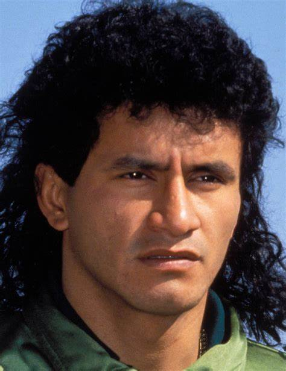

Marco Antonio Etcheverry Vargas (Santa Cruz de la Sierra, 26 de septiembre de 1970) es un exfutbolista y actual entrenador boliviano. Como jugador, se desempeñó como centrocampista, y ha sido reconocido como el «mejor futbolista boliviano de todos los tiempos». Es el futbolista boliviano que más títulos ha conquistado en toda la historia del futbol, junto a Jaime Moreno y Carlos Borja, con un total de 12. Ha sido internacional absoluto con la selección de fútbol de Bolivia, con la cual participó en la Copa Mundial de Fútbol de 1994.
Nos vamos ahora a Suramérica para hablar del más grande jugador de la historia de un país, Bolivia, que tuvo una época brillante en los 90, llegando incluso a jugar un Mundial, el de Estados Unidos, en el que por cierto se enfrentó a España. La estrella de ese equipo era Marco Antonio Etcheverry.
Aunque no le gusta que le digan diablo, sabe que la gente lo hace con cariño y por eso lo tolera. En su criterio, es más ángel que diablo, porque es una persona que no tiene maldad, que no es egoísta ni envidioso y es más bien generoso, tanto así que tiene dos casas donde viven familiares de él y de su esposa y no les cobra nada.A sus padres, José Ángel Etcheverry y Elda Vargas, cuando ganaba bien, trató de darles lo mejor y retribuirles con algo, lo mucho que ellos hicieron por él.
| CLUB | PAIS | AÑO | PARTIDOS | GOLES |
|---|---|---|---|---|
| DESTROYERS | BOLIVIA | 1986-1989 | 91 | 19 |
| BOLIVAR | BOLIVIA | 1990-1991 | 75 | 22 |
| ALBACETE | ESPAÑA | 1992-1993 | 15 | 2 |
| BOLIVAR | BOLIVIA | 1993 | 23 | 10 |
| COLO COLO | CHILE | 1993-1994 | 33 | 8 |
| AMERICA CALI | COLOMBIA | 1995 | 21 | 6 |
| COLO COLO | CHILE | 1995 | 22 | 8 |
| DC UNITED | ESTADOS UNIDOS | 1996-1997 | 63 | 9 |
| BARCELONA | ECUADOR | 1997 | 13 | 6 |
| EMELEC | ECUADOR | 1998 | 6 | 0 |
| DC UNITED | ESTADOS UNIDOS | 1998-200 | 97 | 21 |
| ORIENTE PETROLERO | BOLIVIA | 2001 | 3 | 0 |
| DC UNITED | ESTADOS UNIDOS | 2001-2003 | 82 | 10 |
| BOLIVAR | BOLIVIA | 2005 | 12 | 0 |
| TOTAL | 12 | |||